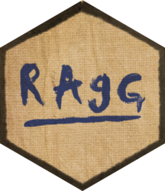

| ragg-package {ragg} | R Documentation |

Anti-Grain Geometry (AGG) is a high-quality and high-performance 2D drawing library. The 'ragg' package provides a set of graphic devices based on AGG to use as alternative to the raster devices provided through the 'grDevices' package.
Maintainer: Thomas Lin Pedersen thomas.pedersen@posit.co (ORCID)
Authors:
Maxim Shemanarev (Author of AGG) [copyright holder]
Other contributors:
Tony Juricic tonygeek@yahoo.com (Contributor to AGG) [contributor, copyright holder]
Milan Marusinec milan@marusinec.sk (Contributor to AGG) [contributor, copyright holder]
Spencer Garrett (Contributor to AGG) [contributor]
Posit, PBC [copyright holder, funder]
Useful links:
Report bugs at https://github.com/r-lib/ragg/issues